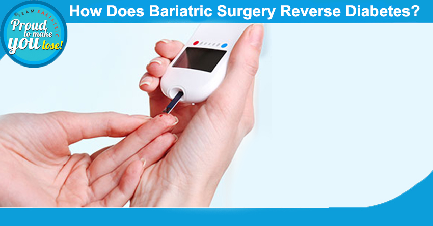

How Bariatric Surgery Can Reverse Diabetes and Improve Overall Health
Obesity is the root cause of diverse diseases such as Asthma, sleep apnea, cardiovascular problems, Type 2 Diabetes Mellitus, joint pains and most important some forms of cancers.
Obesity increases insulin resistance in the body leading to Type 2 Diabetes Mellitus, and also results in Metabolic Syndrome.
There are various ways to deal with these problems which include changes in lifestyle and modification in the eating habits and use of certain drugs. But almost all of the studies conducted have come to the conclusion that these therapies are not effective in providing sustained weight loss. Bariatric surgery has been the most effective treatment option till date which results in effective and sustained weight loss along with resolution of the other problems associated with obesity.
There are various bariatric and metabolic surgical procedures available which can be done by Laparoscopic Techniques as well as with Robotic assistance. They include Sleeve gastrectomy, Roux-en-Y gastric bypass, Mini Gastric Bypass, Ileal Interposition, Duodeno-Jejunal Bypass, and so on.
Mechanism of resolution of Diabetes Mellitus:
The intestine is now considered as a metabolic organ and this new insight can be utilized for the treatment of Diabetes. Bariatric and metabolic surgery leads to changes in the anatomy of the gastrointestinal tract resulting in the treatment of obesity and diabetes mellitus.
Reason Behind How Bariatric Surgery Reverse Diabetes?
The quick lowering of blood sugar after bariatric surgery is due to hormonal changes after re-routing of the small intestine and not purely do the restriction of the calorie intake. It has been proposed and proved that after bariatric surgery there is an augmented release of certain hormones like GLP-1 and PYY from the small intestine that leads to improvement in the high blood sugar levels. These hormones not only decrease the cellular resistance to insulin, they also increase the efficiency of insulin. There is also decreased production of glucose from the liver due to their effects.
After surgery, long-term follow-up for the best results is a must. It’s a complete lifestyle change. One must follow instructions carefully for optimum results.There are absolute guidelines decided by the international diabetes federation for the selection of patients who can be benefitted from surgery.
These surgeries must be done at the best bariatric and metabolic surgical centers doing these surgeries routinely and under expert care and experienced hands. Although hospital stay remains from 2 to 3 days, a strict and regular follow-up is a must.
Back to Blog